GaugeBench report
Suite sample · generator v0.1.0 · seed 7
Why candidates were rejected
Every candidate image is re-read from pixels and checked for visibility and ambiguity before it is published. Rejected candidates are regenerated with a new seed.
Scorer sanity checks
Reference answerers with known behaviour. Oracle must score 100%; near-miss (just outside tolerance) must score 0%; shortcut heuristics should stay low.
| Answerer | Overall | Read value | Zone status | Set-point deviation | Panel alarm | Panel max (mixed ranges) | Change over time | Dual scale | Tank level | Panel count |
|---|---|---|---|---|---|---|---|---|---|---|
| oracle | 100% | 100% | 100% | 100% | 100% | 100% | 100% | 100% | 100% | 100% |
| near_miss | 0% | 0% | 0% | 0% | 0% | 0% | 0% | 0% | 0% | 0% |
| random | 7% | 0% | 75% | 0% | 0% | 50% | 0% | 0% | 0% | 0% |
| shortcut | 10% | 3% | 50% | 0% | 0% | 100% | 0% | 0% | 0% | 0% |
Leaderboard
| Model | Tasks | Overall | Read value | Zone status | Set-point deviation | Panel alarm | Panel max (mixed ranges) | Change over time | Dual scale | Tank level | Panel count | Parse fails |
|---|---|---|---|---|---|---|---|---|---|---|---|---|
| gemini-3.5-flash-lite | 70 | 46% | 32% | 100% | 25% | 100% | 100% | 25% | 25% | 75% | 50% | 0 |
Accuracy by difficulty level
Mixed suite: level 1 = clean dial, level 5 = all factors may be hard at once.
All families
Capability curves (one factor at a time)
Read-value tasks on a clean dial where exactly one visual factor is changed. A drop pinpoints the specific visual skill the model lacks.
Scale type
Dial sweep (deg)
Minor divisions per major
Label every Nth major
Printed multiplier
Dial face
Glare level
Camera tilt (deg)
Blur (px)
Sensor noise
Exposure gain
How wrong are the wrong numbers?
Numeric answers, error measured in multiples of the allowed tolerance (1× = half a dial division). Near misses suggest imprecise reading; large errors suggest misreading the scale, multiplier or needle.
| Model | ≤1× (correct) | 1–2× | 2–5× | 5–20× | >20× | No number |
|---|---|---|---|---|---|---|
| gemini-3.5-flash-lite | 33% | 33% | 24% | 9% | 0% | 0% |
Wrong ring (dual scale)
On two-scale dials, how many wrong answers were actually the reading of the other scale (e.g. bar given when psi was asked).
| Model | Tasks | Accuracy | Read the other ring |
|---|---|---|---|
| gemini-3.5-flash-lite | 4 | 25% | 0/3 |
Failure gallery — gemini-3.5-flash-lite
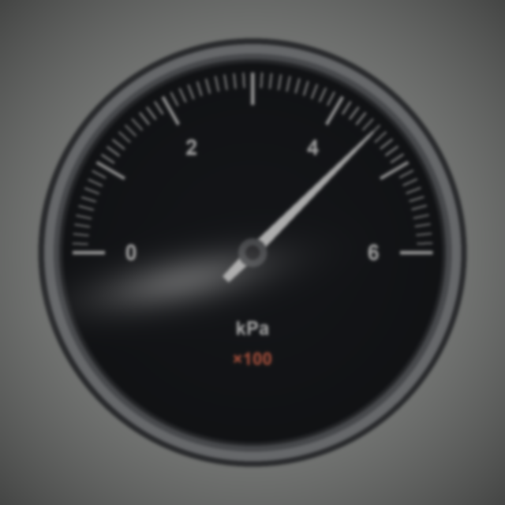
Read value · read_value-L3-0002
Key: 450.0 ± 5 · Model: 520
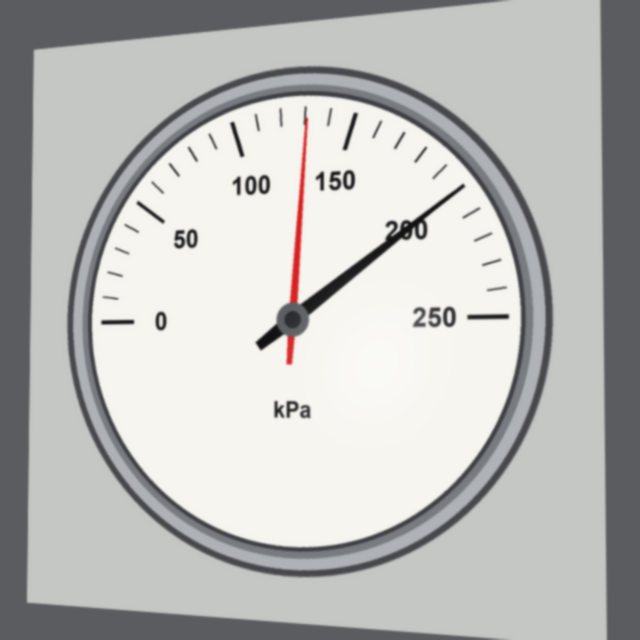
Set-point deviation · setpoint_deviation-L2-0001
Key: 69.0 ± 10 · Model: 80
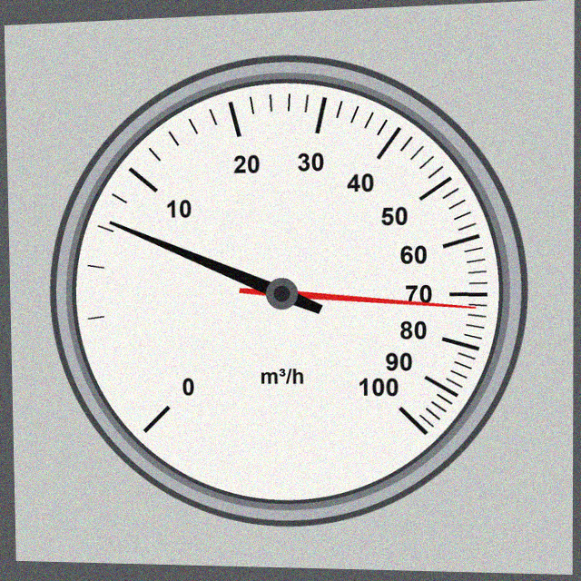
Set-point deviation · setpoint_deviation-L3-0002
Key: -66.0 ± 2 · Model: -62
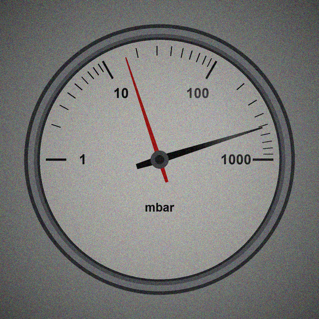
Set-point deviation · setpoint_deviation-L4-0003
Key: 501.0 ± 55 · Model: 582
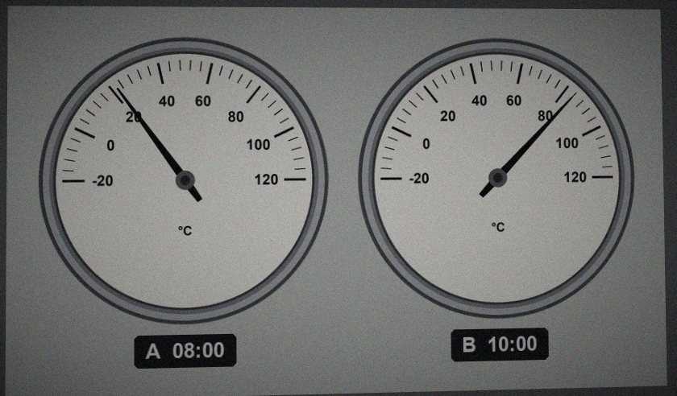
Change over time · temporal_change-L1-0000
Key: 62.0 ± 4 · Model: 68
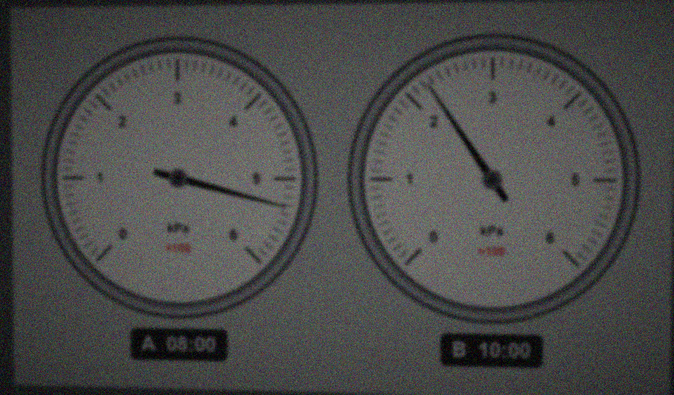
Change over time · temporal_change-L3-0002
Key: -308.0 ± 10 · Model: -290
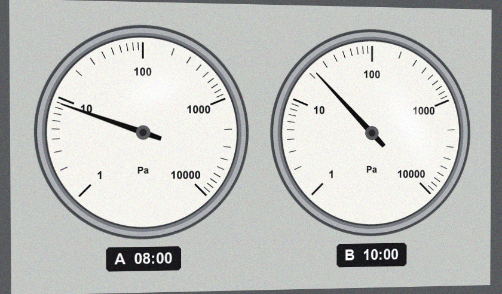
Change over time · temporal_change-L4-0003
Key: 13.0 ± 5.5 · Model: 20
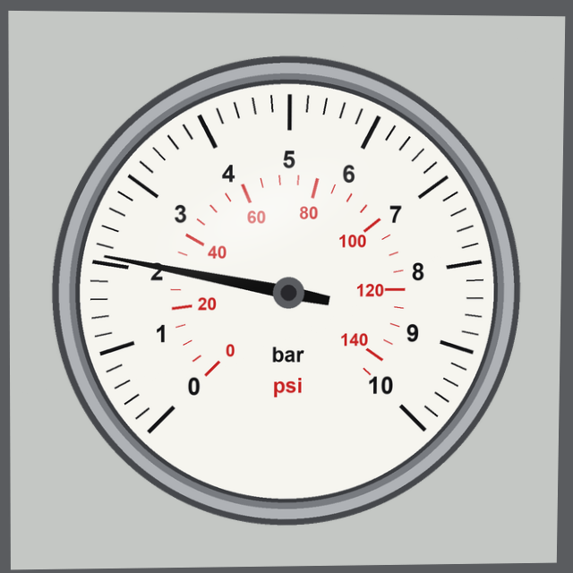
Dual scale · dual_scale-L1-0000
Key: 2.08 ± 0.1 · Model: 2.2
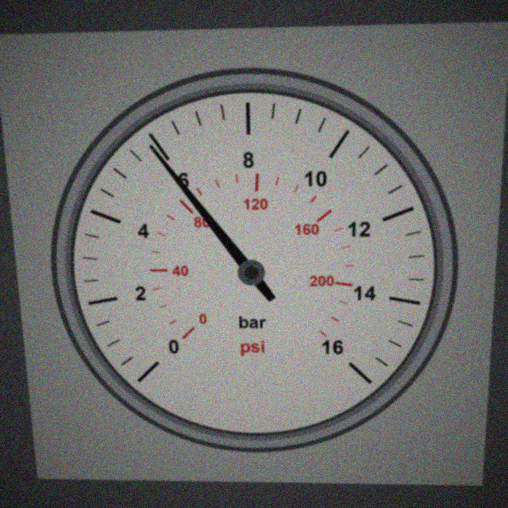
Dual scale · dual_scale-L3-0002
Key: 5.87 ± 0.25 · Model: 5.6
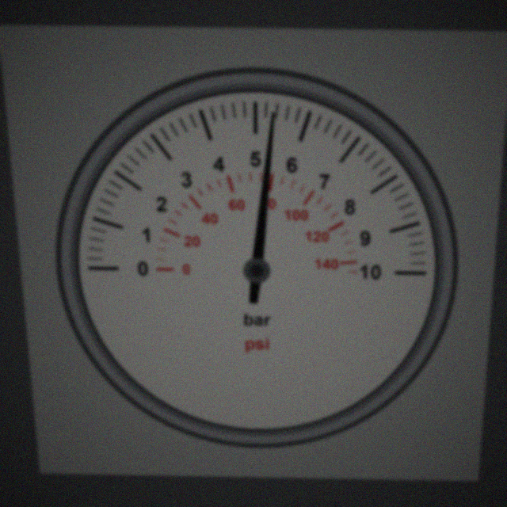
Dual scale · dual_scale-L4-0003
Key: 77.5 ± 2.5 · Model: 82
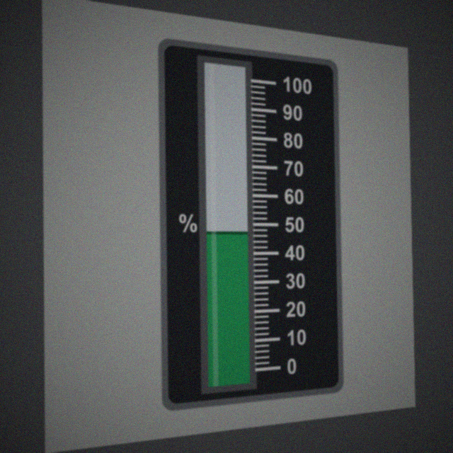
Tank level · level_reading-L4-0003
Key: 47.1 ± 1 · Model: 50
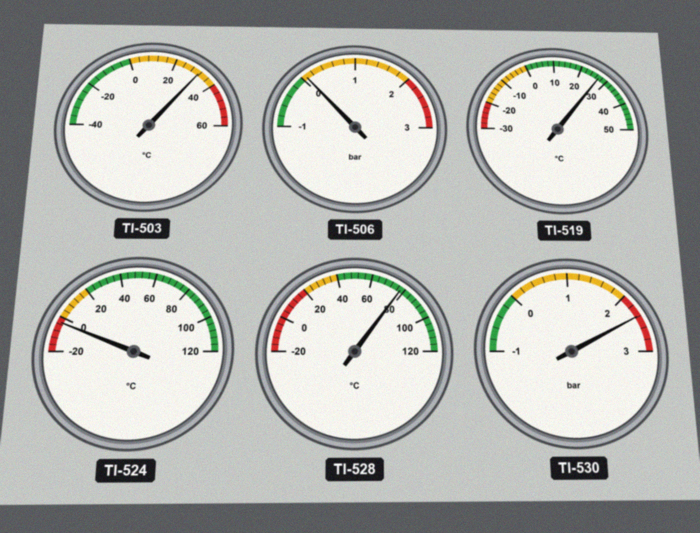
Panel count · panel_count-L2-0001
Key: 4 ± 0 · Model: 3